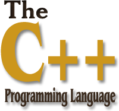

C++ 教程

C++ 是一种高级语言，它是由 Bjarne Stroustrup 于 1979 年在贝尔实验室开始设计开发的。C++ 进一步扩充和完善了 C 语言，是一种面向对象的程序设计语言。C++ 可运行于多种平台上，如 Windows、MAC 操作系统以及 UNIX 的各种版本。
本教程通过通俗易懂的语言来讲解 C++ 编程语言。
谁适合阅读本教程？
本教程是专门为初学者打造的，帮助他们理解与 C++ 编程语言相关的基础到高级的概念。
阅读本教程前，您需要了解的知识：
在您开始练习本教程中所给出的各种实例之前，您需要对计算机程序和计算机程序设计语言有基本的了解。
编译/执行 C++ 程序
实例
#include <iostream>
using namespace std;
int main()
{
cout << "Hello, world!" << endl;
return 0;
}
运行实例 »
你可以用"\n"代替以上代码里的endl。
实例
#include <iostream>
using namespace std;
int main()
{
cout << "Hello, world!" << "\n";
return 0;
}
KgdBukn
kgd***n@outlook.com
C++中"\n" 与 endl的区别是什么?
"\n" 表示内容为一个回车符的字符串。std::endl 是流操作子，输出的作用和输出 "\n" 类似，但可能略有区别。
std::endl 输出一个换行符，并立即刷新缓冲区。
例如:
相当于:
由于流操作符 << 的重载，对于 '\n' 和 "\n"，输出效果相同。
对于有输出缓冲的流（例如cout、clog），如果不手动进行缓冲区刷新操作，将在缓冲区满后自动刷新输出。不过对于 cout 来说（相对于文件输出流等），缓冲一般体现得并不明显。但是必要情况下使用 endl 代替 '\n' 一般是个好习惯。
对于无缓冲的流（例如标准错误输出流cerr），刷新是不必要的，可以直接使用 '\n'。
KgdBukn
kgd***n@outlook.com
刘振豪
310***8030@qq.com
.h中存放类的声明，函数原型（放在类的声明中）。
.cpp存放函数体。
也就是说，一个存放声明(declaration)，一个存放定义（definition)。
如果我们在一个头文件里声明了一个函数，当我们需要定义这个函数（这个定义是唯一的，也就是只能定义一次），或者需要使用这个函数时，我们在 cpp 中需要 include 这个头文件。
同样地，如果我们在一个头文件里声明了一个类，当我们需要定义类里的成员函数，或者我们需要使用这个类时，我们在 cpp 中需要 include 这个头文件。
对于类的设计者来说，头文件就像他们和类的使用者的一个合同，编译器会强化这一合同，它会要求你在使用这些类里的函数或结构时必须要声明。
刘振豪
310***8030@qq.com
罗班克
140***5215@qq.com
<>先去系统目录中找头文件，如果没有在到当前目录下找。所以像标准的头文件 stdio.h、stdlib.h 等用这个方法。
" "首先在当前目录下寻找，如果找不到，再到系统目录中寻找。 这个用于 include 自定义的头文件，让系统优先使用当前目录中定义的。
罗班克
140***5215@qq.com
星铭 cainiao
wan***xiao1516@163.com
"\n"表示一个字符串，只有一个数据是回车符。
'\n'表示一个字符。
这两个在输出上是一样的！
关于 endl:
1、在 C++ 中，终端输出换行时，用cout<<......<<endl与 "\n" 都可以，这是初级的认识。但二者有小小的区别，用 endl 时会刷新缓冲区，使得栈中的东西刷新一次，但用 "\n" 不会刷新，它只会换行，盏内数据没有变化。但一般情况，二者的这点区别是很小的，在大的程序中可能会用到。建议用 endl 来换行。
2、endl 除了写 '\n' 进外，还调用 flush 函数，刷新缓冲区，把缓冲区里的数据写入文件或屏幕.考虑效率就用 '\n'。
3、cout *lt;< endl; 除了往输出流中插入一个 '\n' 还有刷新输出流的作用。
在没有必要刷新输出流的时候应尽量使用cout << '\n', 过多的 endl 是影响程序执行效率低下的因素之一。
星铭 cainiao
wan***xiao1516@163.com
lici
224***6959@qq.com
如果想显示多行文本，如下：
#include <iostream> using namespace std; int main() { cout<<"...............\n" <<"Hello, world!\n" <<"Welcome to c++\n" <<"...............\n"; return 0; }不用一直这样 cout 多行插入。
lici
224***6959@qq.com
逗神大人
oyo***_2012@hotmail.com
真正的开发过程中， 尽量避免使用using namespace std;等直接引入整个命名空间，否则会因为命名空间污染导致很多不必要的问题， 比如自己写的某个函数，名称正好和std中的一样， 编译器会不知道使用哪一个， 引起编译报错， 建议使用:
等直接由命名空间组合起来的全称。
逗神大人
oyo***_2012@hotmail.com
PtaQ
992***0862@qq.com
#include <stdlib.h> #include <iostream> using namespace std; int main() { cout<<"Hello World "<<endl; system("pause"); return 0; }包含头文件 stdlib.h，并在主程序中加入system("pause");可以在程序运行完以后使黑框暂停显示，等待输入，而不是闪退。
PtaQ
992***0862@qq.com
乐山大佛
law***wang@163.com
cout 流速度较慢，如果速度过慢可以用 <stdio.h> 库中的 printf() 格式化输出函数，不需要 using namespace std;。
它的格式为：
程序实例：
#include <stdio.h> int main() { printf("Hello World!\n"); return 0; }注意：printf() 中不能使用endl！
乐山大佛
law***wang@163.com
羊羊
hny***163.com
C++ 中 using namespace std 到底是什么意思？
声明一个命名空间的意思。命名空间在多人合作的时候很有用，因为你定义了变量 a，别人也定义了变量 a，这样就重复定义了。如果你在自己的命名空间中定义了 a，别人在别人的命名空间中定义了 a，这样就不重复了，比如：
xx::a 和 yy::a虽然都叫 a，但是不是同一个变量。
std 是系统标准的命名空间，为了和用户定义的名字不重复，所以它声明在 std 这个命名空间中。另外，这个空间也像一个大包一样，包括了系统所有的支持。
羊羊
hny***163.com
Unkind
528***640@qq.com
参考地址
::在 C++ 中表示作用域，和所属关系。::是运算符中等级最高的，它分为三种，分别如下：
一、作用域符号：
作用域符号::的前面一般是类名称，后面一般是该类的成员名称，C++ 为例避免不同的类有名称相同的成员而采用作用域的方式进行区分。
例如：A,B 表示两个类，在 A,B 中都有成员 member。
那么：
二、全局作用域符号：
全局作用域符号：当全局变量在局部函数中与其中某个变量重名，那么就可以用::来区分，例如：
char zhou; //全局变量 void sleep() { char zhou; //全局变量 char(局部变量) = char(局部变量)*char(局部变量); ::char(全局变量) =::(全局变量) *char(全局变量) }三、作用域分解运算符：
:: 是 C++ 里的作用域分解运算符，“比如声明了一个类 A，类 A 里声明了一个成员函数 void f()，但没有在类的声明里给出f的定义，那么在类外定义 f 时，就要写成 voidA::f()，表示这个 f() 函数是类 A 的成员函数。例如：
class CA { public: int ca_var; int add(int a, int b); int add(int a); } //那么在实现这个函数时，必须这样写： int CA::add(int a, int b) { return a + b; } //另外，双冒号也常常用于在类变量内部作为当前类实例的元素进行表示，比如： int CA::add(int a) { return a + ::ca_var; } //表示当前类实例中的变量ca_var。Unkind
528***640@qq.com
参考地址
tdl
tdl***g@163.com
1、.cpp文件和.h文件的区别：
cpp文件用于存放类的定义 definition，h 文件用于存放类的声明 declaration。
在头文件中声明了一个函数或者类，需要定义或者使用这个函数或者类时，需要在 cpp 文件中 include 这个头文件
2、include 头文件时<> 和 ""的区别：
<>：会先去系统目录中找头文件，如果没有找到再去当前目录下寻找，像是标准的头文件，如 stdio.h，stdlib.h 使用这个方法。
""：会先在当前目录下寻找，如果找不到再去系统目录下寻找，适用于自己定义的头文件
3、using namespace std;这行代码的作用：
声明一个命名空间，在多人合作时，即使有函数同名了，但是因为所在的命名空间不同，也不会导致出现错误。
std是系统标准的命名空间。
tdl
tdl***g@163.com
嚣张
123***789@qq.com
为什么要使用 using namespace std;
让我们来逐词理解：
所以没有这行代码会发生什么呢
#include <iostream> // using namespace std; int main() { cout << "Hello, world!" << endl; return 0; }//error那我们该怎样写呢？
#include <iostream> // using namespace std; int main() { std::cout << "Hello, world!" << std::endl; return 0; }可以看到，加了std::后就可以了
嚣张
123***789@qq.com